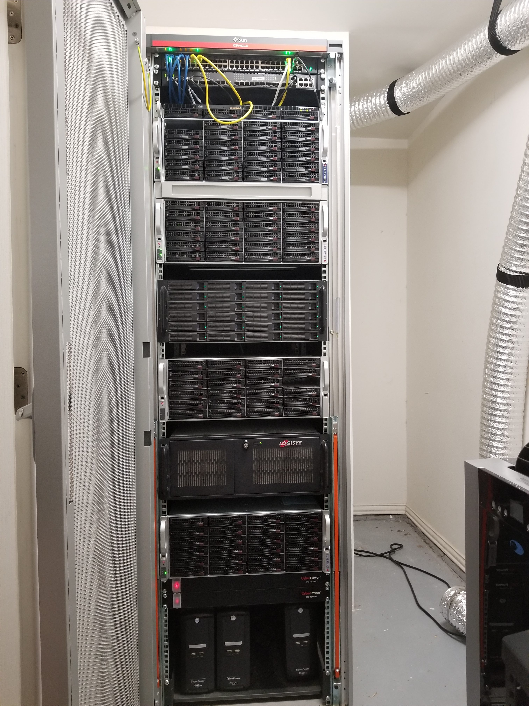
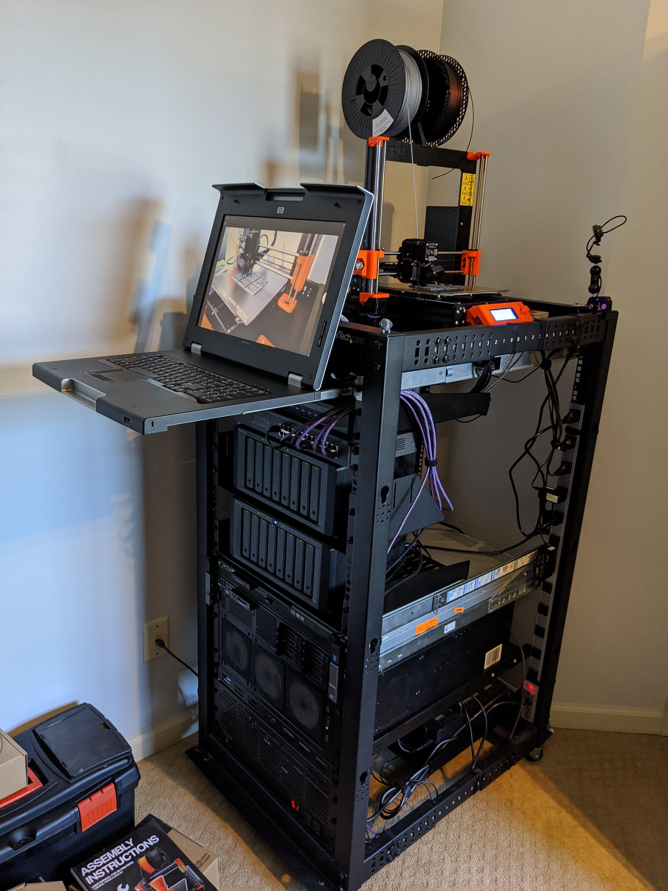
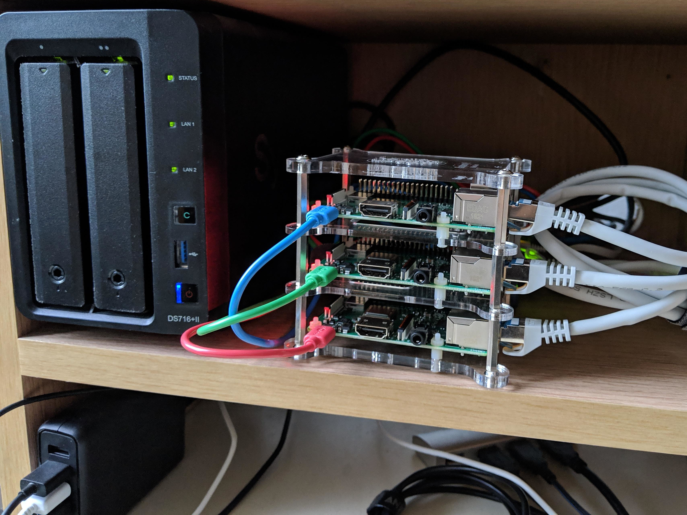
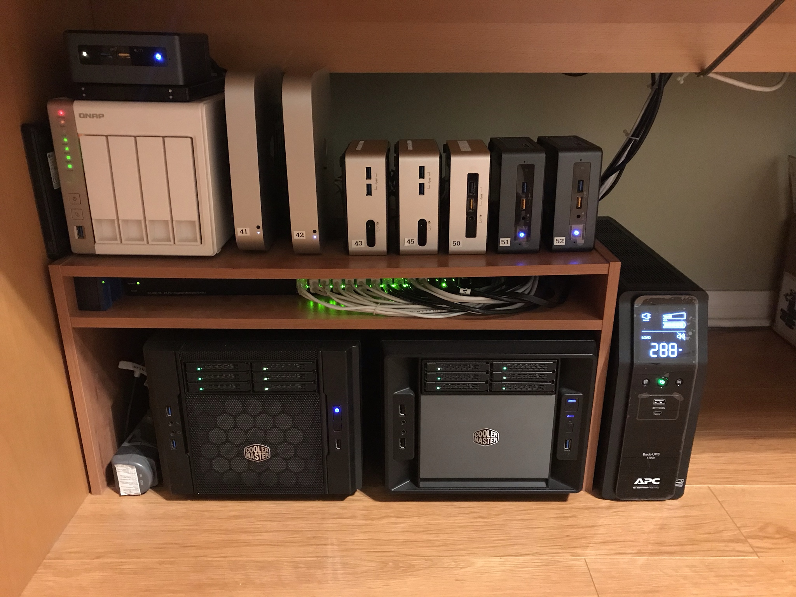
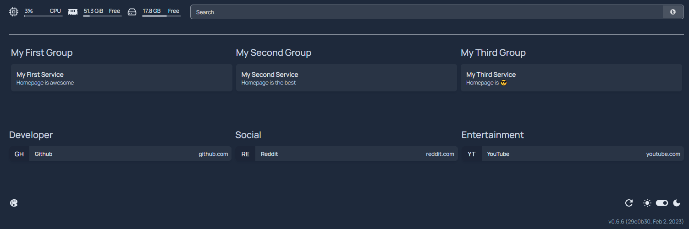
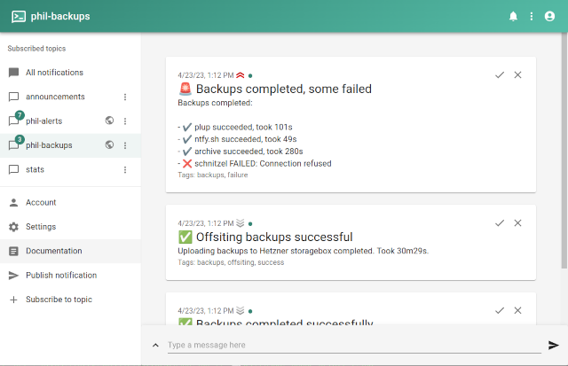
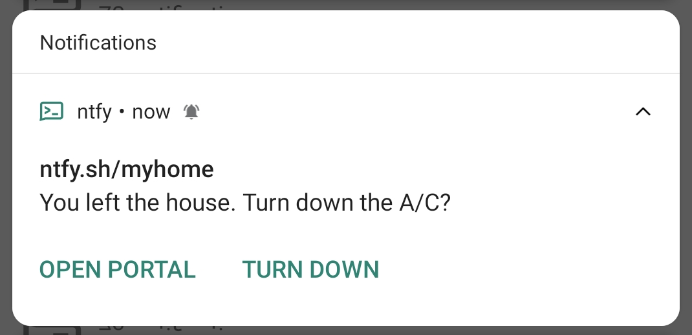
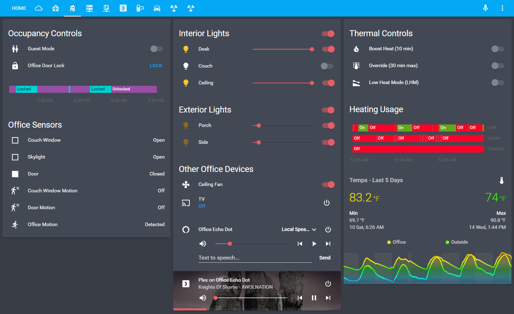
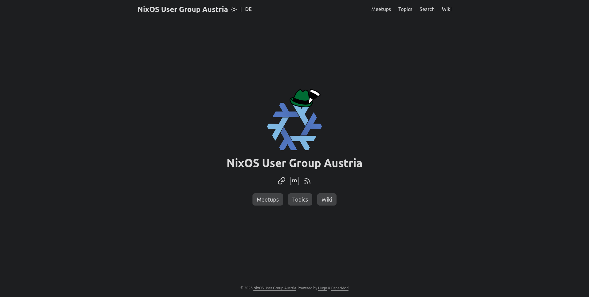
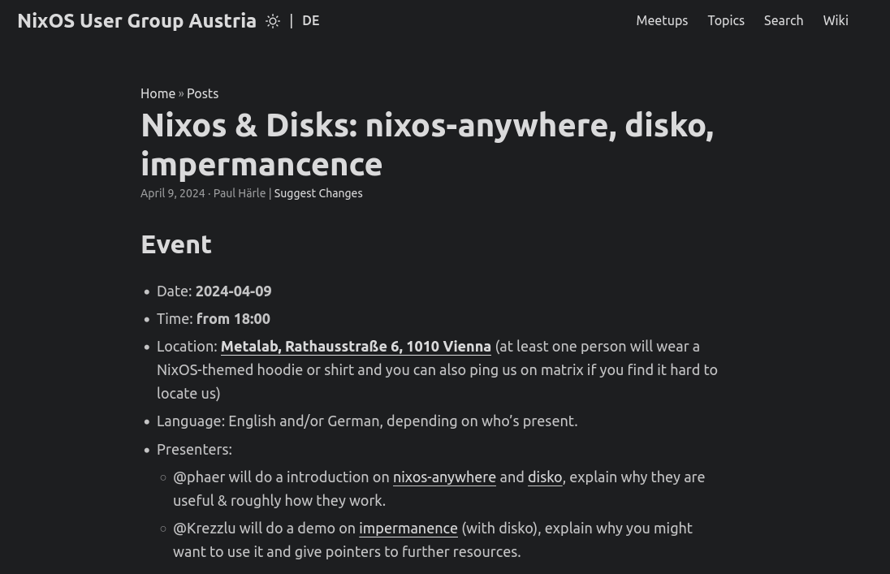

Homelab on NixOS
Declarative and reproducible ❄️
Follow this live
Who am I?
- Student at Graz University of Technology 🎓
- DevOps Engineer/Automation Specialist at smaXtec 🐄
- Linux Advocate and Avid User of FOSS 🐧
- Daily Driving NixOS since 2020 ❄️
What is a homelab?
What is a homelab?

Photo by National Cancer Institute on Unsplash
What is a homelab?
What is a homelab?
 What is a homelab?
What is a homelab?
What is Nix?
Not to be confused with *nix
What is Nix?
- Nix Language
- Nix Package Manager
- Nix Package Library - Nixpkgs
- Nix Operating System - NixOS
- …
What is NixOS?
- Started as research project by Eeelco Dolstra in 2003
- Took off after first stable release branch in 2013 (13.10)
- Stable releases in May and November (e.g. Raccoon - 22.11)
- Receive bugfixes and security updates for 7 months
NixOS
services = {
# Start a systemd service for each incoming SSH connection
openssh.startWhenNeeded = true;
# Enable periodic SSD TRIM to extend life of mounted SSDs
fstrim.enable = true;
# Suspend when power button is short-pressed
logind.extraConfig = ''
HandlePowerKey=suspend
'';
};
Landing page
{ ... }:
{
services.homepage-dashboard = {
enable = true;
listenPort = 8082;
};
}
Landing page
Notifications
{ ... }:
let
domain = "mydomain.at";
ntfyPort = 6780;
ntfyMetricsPort = 9095;
ntfyHost = "notifications.${domain}";
in
{
services.ntfy-sh = {
enable = true;
group = "ntfy";
user = "ntfy";
settings = {
base-url = "https://${ntfyHost}";
listen-http = ":${toString ntfyPort}";
behind-proxy = true;
auth-file = "/var/lib/ntfy/user.db";
# cache-file = "/var/cache/ntfy/cache.db";
attachment-cache-dir = "/var/cache/ntfy/attachments";
auth-default-access = "deny-all";
upstream-base-url = "https://ntfy.sh";
# Set to "disable" to disable web UI
# See https://github.com/binwiederhier/ntfy/issues/459
web-root = "app";
# Enable metrics endpoint for Prometheus
enable-metrics = true;
metrics-listen-http = ":${toString ntfyMetricsPort}";
};
};
user.extraGroups = [ "ntfy" ];
environment.systemPackages = [ services.ntfy-sh.package ];
networking.firewall.allowedTCPPorts = [ ntfyPort ];
}
Notifications
Notifications
Home Assistant
{ ... }:
let
port = 7901;
version = "2023.12.2";
in
{
virtualisation.oci-containers.containers = {
home-assistant = {
image = "ghcr.io/home-assistant/home-assistant:${version}";
volumes = [
"/var/lib/home-assistant:/config"
"/etc/localtime:/etc/localtime:ro"
];
extraOptions = [
"--device=/dev/ttyUSB0"
"--network=host"
];
ports = [
"${toString port}:${toString port}"
];
autoStart = true;
};
};
networking.firewall.interfaces.tailscale0.allowedTCPPorts = [ port ];}
Home Assistant
Some service modules
NixOS User Group Austria

NixOS User Group Austria
NixOS User Group Austria
Mentioned Resources
- My modular, messy NixOS configuration
- Awesome Self-Hosted - Community-maintained list of Free Software network services and web applications which can be hosted on your own servers
- Awesome Nix - Community-maintained link list with helpful resources
Attributions
- Image of mini homelab of Reddit user buster072 - Reddit
- Image of sizeable homelab of Reddit user lusid1 - Reddit
- Image of large homelab of Reddit user JaredBanyard - Reddit
- Image of production-grade “homelab” - EPM
- Brand Logos - Simple Icons
Thanks!
curl -sL https://matthias.thym.at/card
https://blog.thym.at/p/glt24